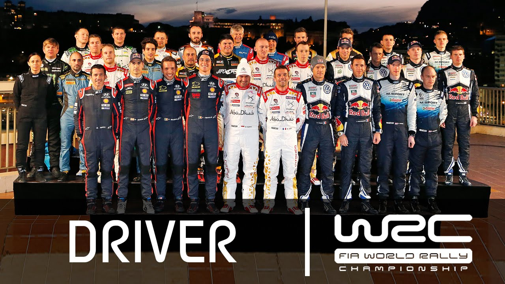

<!DOCTYPE html>
<html lang="en">
<head>
    <meta charset="UTF-8">
    <meta name="viewport" content="width=device-width, initial-scale=1.0">
    <title>Motorsport37 - WRC</title>
    <link rel="stylesheet" href="../CSS/reset.css">
    <link rel="stylesheet" href="../CSS/categoria.css">
</head>
</html>
<body>
    <header>
      
            <nav>
                <ul>
                    <li><a href="../index.html">Início</a></li>
                    <li><a href="formula1.html">Formula 1</a></li>
                    <li><a href="motogp.html">MotoGP</a></li>
                    <li><a href="wec.html">WEC</a></li>
                    <li><a href="indy.html">IndyCar</a></li>
                    <li><a href="wrc.html">WRC</a></li>
                    <li><a href="formulad.html">Formula Drift</a></li>
                    <li><a href="nascar.html">Nascar</a></li>
                    <li><a href="game.html">Game</a></li>
                    <li><a href="creditos.html">Créditos</a></li>
                </ul>
            </nav>
                    
    </header>

    <div class="conteudo">
        <header>
            <h1>WRC World Rally Championship</h1>
        </header>

        <h2>Como funciona a WRC</h2>

        <p>O WRC é dedicado ao rally, com carros competindo em variadas condições off-road. Diferentemente das corridas em circuitos fechados,
           os pilotos enfrentam desafios naturais em trilhas e estradas de terra. Fabricantes como Toyota, Hyundai e Ford participam, e os
           pilotos buscam vitórias em etapas e pontos ao longo do campeonato. A habilidade de condução em diferentes superfícies é essencial no WRC.</p>

        

        <h2>Onde a WRC corre</h2>

        <p>O World Rally Championship (WRC) ocorre em diferentes locais ao redor do mundo, apresentando uma variedade de condições de terreno e desafios
           para os pilotos. As etapas do WRC incluem rallys em estradas de terra, neve, cascalho e asfalto. Alguns dos eventos notáveis do WRC incluem
           o Rally da Suécia (neve), o Rally da Finlândia (terreno de alta velocidade), o Rally de Monte Carlo (asfalto e gelo), entre outros.
           A diversidade de terrenos e condições climáticas é uma característica distintiva do WRC, proporcionando desafios únicos aos competidores.</p>

        

        <h2>Quando a WRC começou</h2>

        <p>World Rally Championship (WRC) começou em 1973. A primeira temporada do WRC contou com uma série de rallys, e desde então, a competição evoluiu
           para se tornar o principal campeonato mundial de rally. A Fédération Internationale de l'Automobile (FIA) supervisiona o WRC, e ao longo dos anos,
           a competição atraiu alguns dos melhores pilotos e equipes do mundo, oferecendo corridas emocionantes em uma variedade de terrenos e condições.</p>

           <video controls width="600" height="350">
            <source src="../VID/firstwrc.mp4" type="video/mp4">
        </video>

        <h2>Como funcionam os carros de WRC</h2>

        <p>Os carros do World Rally Championship (WRC) são veículos altamente especializados, adaptados a uma variedade de terrenos desafiadores encontrados nos rallys.
           Originados de modelos de produção, esses carros passam por extensas modificações, apresentando motores turboalimentados de alta potência, tração nas quatro
           rodas, suspensão ajustada, aerodinâmica otimizada, pneus específicos para cada terreno, sistemas eletrônicos avançados e uma estrutura de segurança robusta.
           Essas características fundamentais garantem o desempenho excepcional e a segurança dos pilotos em condições variadas de corrida.</p>

           <video controls width="600" height="350">
            <source src="../VID/wrccar.mp4" type="video/mp4">
        </video>

        <h2>Qual o motor da WRC</h2>

        <p>o World Rally Championship (WRC) não especifica um tipo específico de motor. Em vez disso, os carros do WRC são baseados em modelos de produção e, portanto,
           podem apresentar uma variedade de motores. Os fabricantes participantes no WRC adaptam os motores de seus carros de produção para atender aos regulamentos da
           competição. Geralmente, os motores são modificados para fornecer maior potência e desempenho, sendo frequentemente turboalimentados para lidar com uma variedade
           de condições de terreno encontradas nos rallys. Cada equipe pode ter abordagens diferentes para a configuração do motor, dependendo do modelo de carro escolhido
           e de suas estratégias de desenvolvimento. Portanto, não há um único tipo de motor específico para todos os carros no WRC.</p>

        

        <h2>Quantos pilotos e equipes competem na WRC</h2>

        <p>O número de pilotos e equipes que competem no World Rally Championship (WRC) pode variar de temporada para temporada, dependendo das inscrições e participações
           de equipes. Geralmente, várias equipes participam do campeonato, cada uma com dois carros, o que pode totalizar mais de 20 carros na competição.
           O número exato de pilotos e equipes pode mudar a cada temporada devido a fatores como entradas e saídas de equipes, mudanças nas regulamentações
           e participações de fabricantes. Para obter informações atualizadas sobre a temporada mais recente, recomenda-se verificar fontes confiáveis, como
           o site oficial do WRC.</p>

        

        <h2>Quais são os pilotos de WRC mais bem-sucedidos de todos os tempos</h2>

        <p>Sébastien Loeb é considerado um dos pilotos mais bem-sucedidos na história do World Rally Championship (WRC). Loeb, originário da França,
           conquistou nove títulos consecutivos de campeão do WRC de 2004 a 2012. Sua habilidade e domínio nas pistas o tornaram uma figura icônica no mundo dos rallys.</p>

        <P>Outro piloto notável é Tommi Mäkinen, da Finlândia, que conquistou quatro títulos consecutivos de 1996 a 1999. Outros grandes nomes incluem Juha Kankkunen,
           que venceu quatro títulos, e Walter Röhrl e Carlos Sainz, cada um com dois títulos.</P>

        

        <footer>
         <p>&copy; 2023 MilenaNovka. Todos os direitos reservados.</p>
     </footer>

</body>